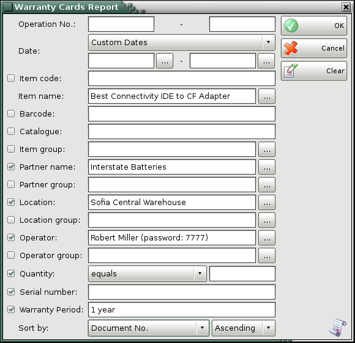
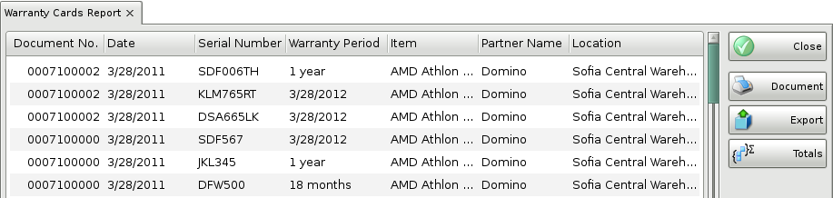

Warranty card report
The Warranty Cards Report displays items for which warranty cards have been issued. The items are divided by rows and by documents. You can use the report to track issued warranty cards and you can filter the data by users, partners and dates. Each row in the warranty card corresponds to a row in the report.
In the first window of the report specify the filter criteria and the fields that will be visualized.
Only rows that are checked are visualized in the report.

You can choose a filter for each field by pressing the F4 key.
You can limit the report to a single criterion for example, visualize all issued warranty cards for a single item, or you can apply several criteria at a time for example, visualize warranty cards of a particular supplier from a particular location for a particular period of time.
To remove all specified filters, click the Clear button. The report will display all operations without any restrictions.
Click the OK button to generate the report using the specified criteria. Click Cancel to close the window.

The warranty cards report contains data about issued warranty cards. It shows the document number, the date, the items, the quantities, the serial numbers, the warranty period, the company, the user and the location of the operation.
Close button closes the report, Document button is used for report print preview, button Export to exports the report to CSV, Excel, Web Page or XML Data format and Totals button adds a line at the bottom of the window, that contains quantities and values amounts for each column.
�2006-2012 Microinvest, All rights reserved